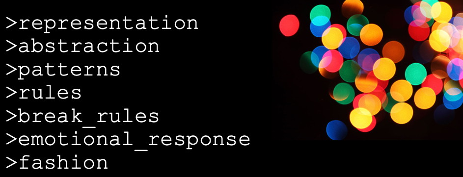
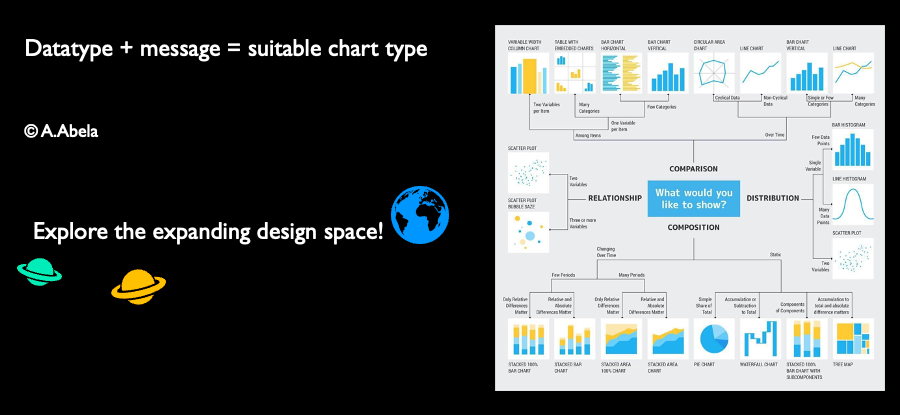
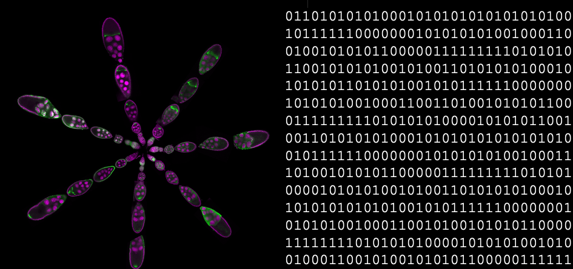
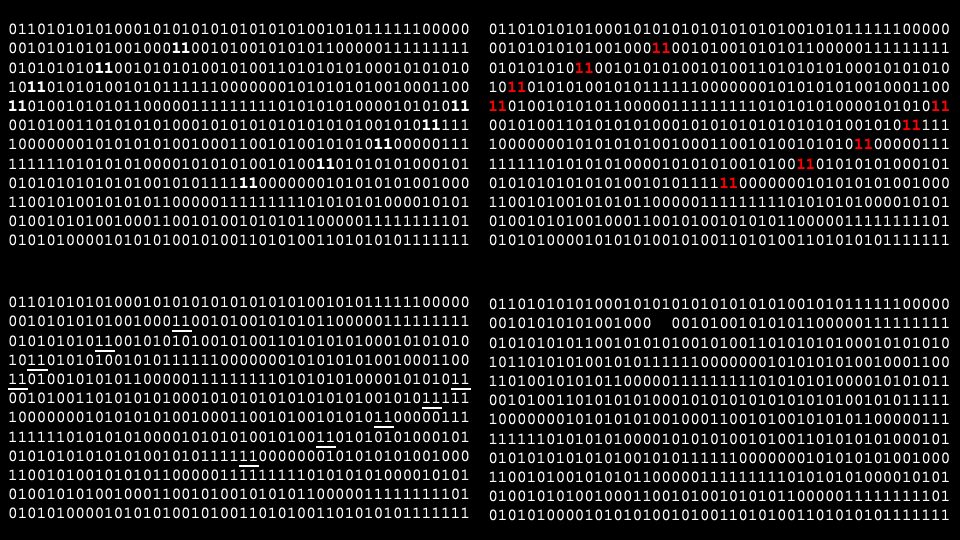
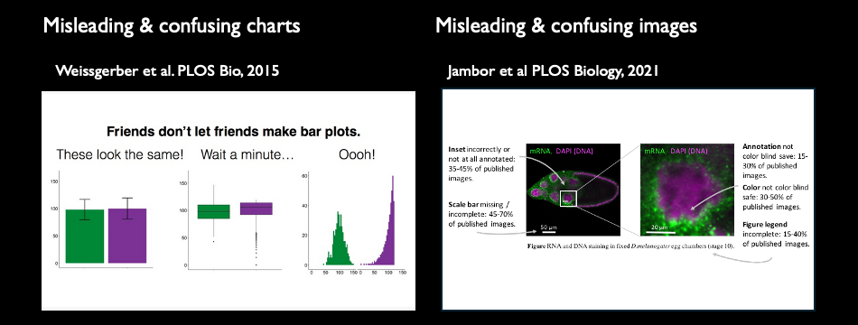
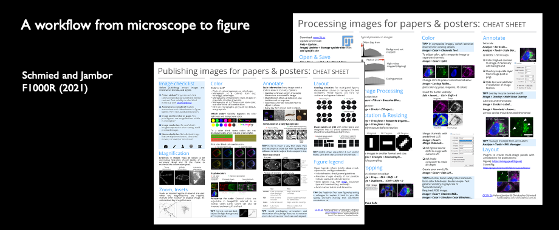
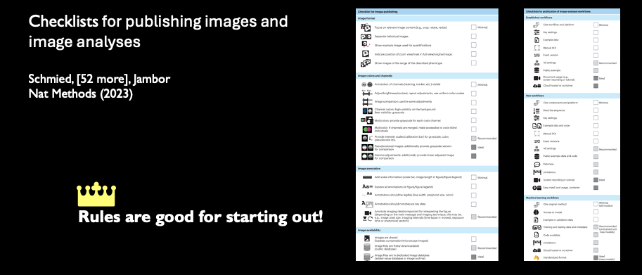
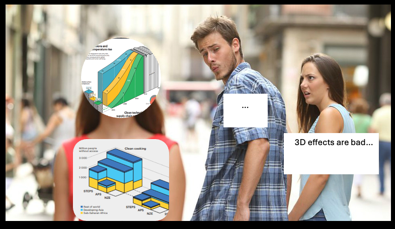
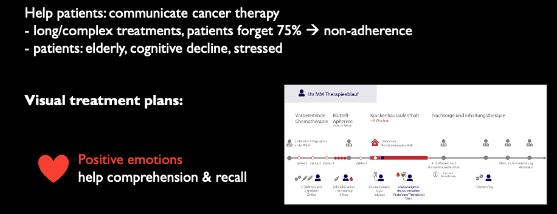

Saturday is Art-Day at ASCB!
Last week I was invited to the ASCB Subgroup “Science and Art: Bridging Two Creative Universes“ . Artists shows subjective views of the world, while biologists measure life, which seem like opposites. Where they converge is in their shared goal to communicate their ideas and insights. And nowhere are they as close as in the communication with data visualizations.
What I spoke about
I am neither a cell biologist (anymore), nor an artist. But my work is to make data understandable through visualization. Data visualization is about finding truthful, insightful, and pleasing representations for messy, uncertain, and complicated biological data. And to create effective visualizations, we use techniques from the arts. I am fully behind the notion of the organisers, that there is an “impact of artistic practices on scientific research and communication“. In my talk I show how concepts from art make data visualizations work.

Representation
Art expresses itself in many representations, from sculpture to video, and these evolve over time. In data visualizations we also rely on a pool of representations we can choose from, and these are the chart types. Each serves a different purpose, some are intuitive, and others require prior training.

Abstraction
Abstraction is used constantly in science. We take a picture of cute animals, make continuous observations of molecular interactions, or take snapshots of genomes – each is a simplification into 1s and 0s, which then can be averaged, correlated, and tested.

Pattern recognition
When we turn 1s and 0s into visualizations for inspection, we use of the preattentive cues to find outliers, patterns or to draw attention.

Rules
Data visualization relies on human visual perception. From magicians, we that our visual senses can be tricked. In science we want to avoid this to not mislead our audiences. Therefore, we established rules for scientists how to faithfully present data.
  
Break rules
At times, we see that rules get broken. Currently, against best practice, 3D-effects are making a comeback in charts. Usually, these charts do not necessarily want to present data the best way, but merely grab the attention of the visually overstimulated audience.

Emotional response
The purpose of attention grabbing is to elicit an emotional response. Emotional responses get people engaged and known to enhance comprehension and memory. Any emotional response works for this, so in art and data visualization we can use humor, horror and of course beauty. For our patient communication project used a calming and somewhat pretty visualization to help cancer patients understand their treatment course.

Fashion
Just as in art, also in data visualization we are not impartial to trends. Just check out the below iterations of a figure - can you guess which was fashionable when? Check out Isaac and James paper to find out which we considered pretty in 2023 - and how they show us that cells can survive happily with JUST TWO LIPIDS!

Some more literature
Get all the reading material, including the first book on data visualization for life science from 1885!
My wonderful colleagues
Please also check out the great work by all the other speakers: Date Goodsell and Beate Mierzwa do not need any introduction, their work is shared widely and who has not heard about the molecule diagrams and the new cell bio computer game. Gaia Pigino explored ways to use art to even make her own science more fun for herself, while Mary O’Reilly shared fun ways to increase creativity in our illustrations and Christopher Prinz told his personal story of heightening the game of his lab with art. Thao Do and Mol Mir try to bring art to the scientists in their respective institutes, while Leonora Martínez-Nuñez uses art to publicize science to a public. Representation with sculptures was definingly a theme, maybe we need some haptic, real-world objects after a decade of big data. We learned about ceramics from Duygu Ozpolat, glass art from Alex Ritter, and metal welding from Bryan Welm. And finally, Melanie Stegman introduced a relatively new format, video games, as another flower in the bouquet of possibilities to make science fun and accessible to wide audiences.